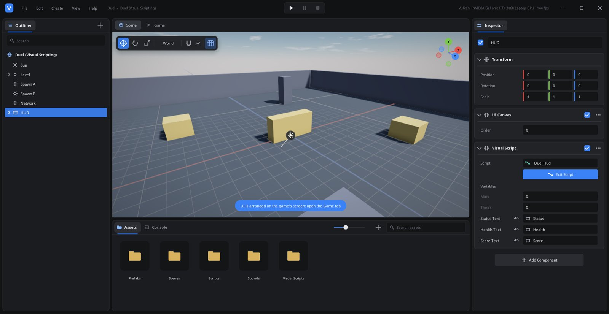
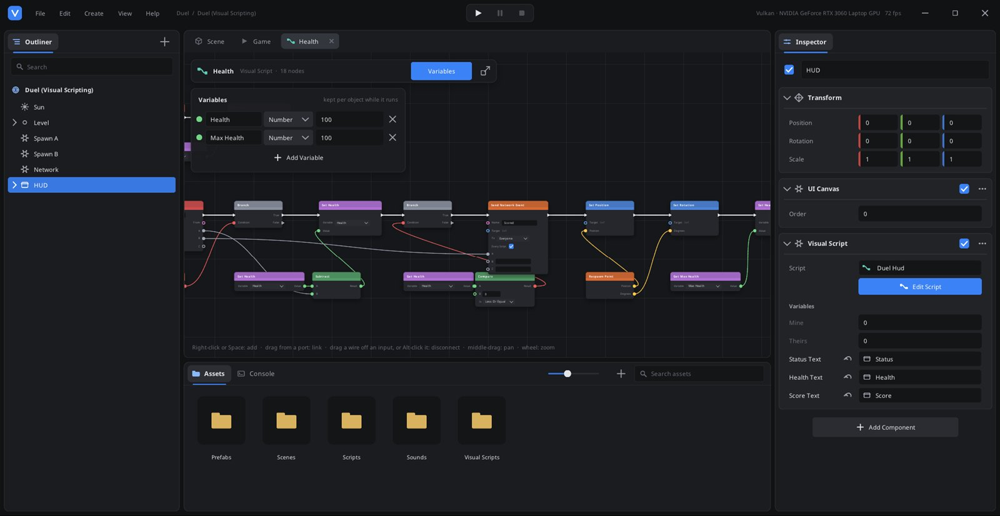

Visual scripting
Make behaviour by wiring nodes together instead of writing code. A visual script is a graph saved in a .vscript file; a Visual Script component runs it on an object. It's as capable as the C# route for most games, multiplayer included.
Try one
This is the Duel's shooting script. Drag to pan, scroll to zoom, hover a node to see what it does, and press Run to watch the flow travel along the white wires in the order it runs. Switch between the sample's scripts with the buttons.
Events start things
Nothing happens until an event node starts it. They have red headers and no flow coming in:
| Event | When |
|---|---|
| On Start | Once, when the object starts. |
| On Update | Every frame. Delta Time is how long the frame took. |
| On Key Pressed / Released, On Mouse Pressed / Released | The frame a key or button goes down or up. |
| On Interval | Every so many seconds. |
| On Collision, On Trigger | When the object bumps into something, or something enters its trigger. Other is what. |
| On Event | When a Send Event with the same name is sent (from another script, or C#). |
| On Connected, On Disconnected, On Player Joined / Left, On Network Event | Network games: see Multiplayer. |
Flow: what happens, in order
The white wires between the triangles are the flow: when a node is done, it carries on along its output. Nodes that only work something out have no flow; they're worked out when something needs them.
- Branch goes one way if a condition's true, the other if not.
- Sequence runs Then 1, then Then 2, then Then 3: for several things in a row from one event. Wiring its last output adds another, up to ten.
- For Loop runs its body a number of times, with the Index.
- Wait carries on after some seconds, without holding anything else up.
- Cooldown lets the flow through at most once every so many seconds: fire rates, jump spam.
- Do Once lets it through the first time only.
Values: what things are
Coloured wires carry values from an output to an input. The colour is the type, and the editor only lets wires join ports that fit (a number fits a vector's three parts; anything fits text).
An input with no wire uses the value typed on the node. An Object input with no wire means the object the script is on (Self). Grey settings with no port (a key, a name) are chosen on the node itself.
Right-click a vector or colour port (its dot or its name) and choose Split Into X, Y, Z to show it as one number for each part. Each can be wired or typed on its own: wire a height into Y and type X and Z, without a Make Vector node. A split output gives each part on its own the same way. Join Back on a part's menu puts it back together.
Variables
Each graph has Variables (the button at the top of the graph): numbers, true/false, text, vectors, colours and objects, with starting values. Get and Set Variable nodes read and change them: drag a variable from the list into the graph and choose Get or Set (hold Ctrl to get or Alt to set without asking). Double-click a variable's name to rename it.
- Each object has its own. Two enemies running the same script each have their own Health.
- Starting values per object. Under the Visual Script component in the inspector, the graph's variables are listed: set one there and it's this object's own (shown bright, with a ↶ to put it back). It's how a script points at things in the scene, like a door's lever or a player's head.
- Other objects' variables: Get Variable On and Set Variable On.
- From C#:
script.GetVariable("Health")andscript.SetVariable("Speed", 8f)on theVisualScriptcomponent.

Scripts talking to each other
- Send Event starts On Event nodes with the same name in every script in the scene, with a value. Send Event To sends it to one object's scripts only.
- C# can send them too:
VisualScript.SendEvent("Door Opened", door). - Across the network, Send Network Event and On Network Event do the same between machines.
Making graphs in the editor
| Do this | To |
|---|---|
| Right-click, or Space | Add a node: type part of its name or what it's for |
| Drag from a port | Wire it to another (let go on empty space to add a node already wired) |
| Drag a wire off an input, or Alt-click it | Disconnect it |
| Drag a variable into the graph | Get or set it (Ctrl: get, Alt: set) |
| Right-click a vector port | Split it into X, Y and Z, or join it back |
| Middle mouse drag, wheel | Pan, zoom |
| Del, Ctrl+Z | Delete what's selected, undo |
Graphs save themselves as you edit, and a graph changed while the game is playing changes the running scripts straight away.

Finding out what's wrong
- While playing, the flow lights up as it runs, so you can see which way a Branch went.
- Print writes a value to the Console.
- A node that goes wrong (Set Text on an object with no text, say) is marked red with what happened, the error goes to the Console, and that object's script stops rather than repeating the error every frame.
Every node
The node reference lists all of them, with their inputs, outputs and what they do, searchable and by category.